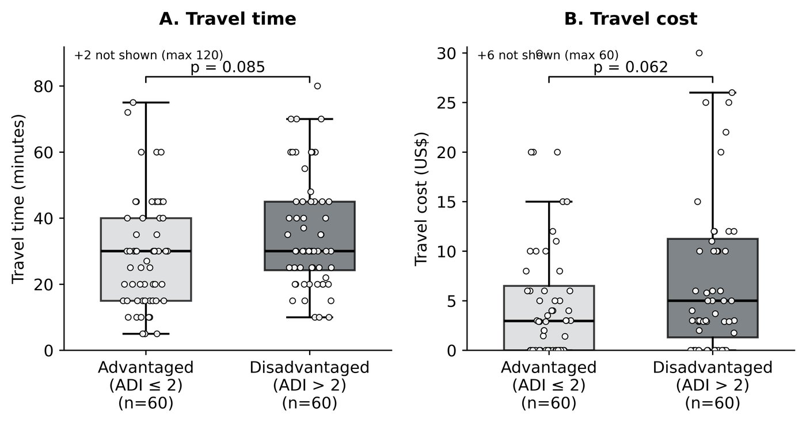
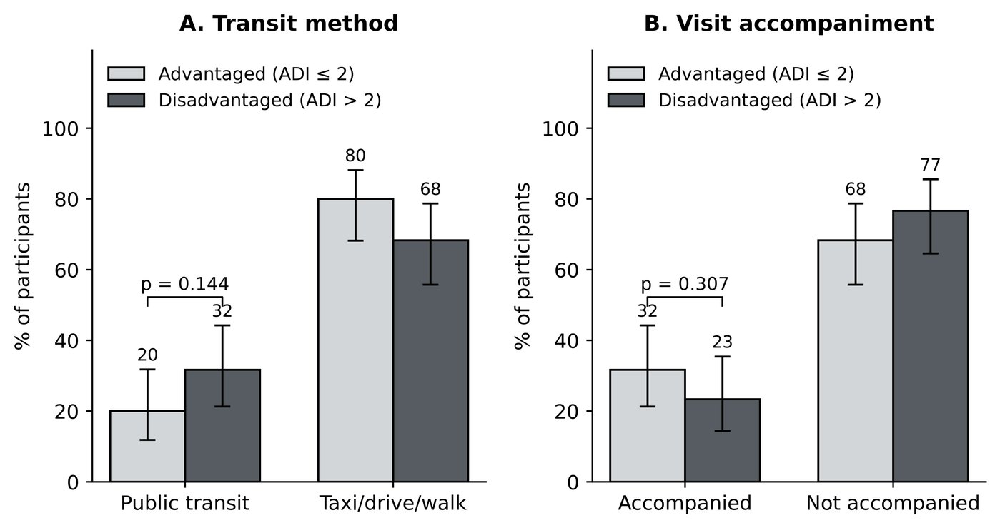

Does neighborhood deprivation predict urogynecologic access in Brooklyn?
Deprivation indices are used as a proxy for the barriers a patient faces, and the barrier they most directly encode is travel: in most of the country, a poorer neighborhood means a longer, costlier trip to specialty care. New York has a subway. This study asks whether the index still tracks access where the transit system does not care how wealthy your block is.
How the study was built
A survey study designed so that the null result would still say something — by measuring travel burden directly rather than inferring it from the index.
Who was included
English-speaking women aged 18–85 presenting for evaluation of overactive bladder — urgency, frequency, perceived incomplete emptying, hesitancy or incontinence. Women with known incomplete emptying, prior catheterization or a current catheter were excluded, as were women over 85, to preserve deidentification. Of 144 approached, 120 met criteria.
How deprivation was measured
Participants located their home on the Neighborhood Atlas — the University of Wisconsin's Area Deprivation Index map — and the ADI value for that block group was recorded, from 1 (least deprived) to 10 (most). Because the distribution in this population was so compressed, scores were dichotomized at advantaged (ADI ≤ 2) versus disadvantaged (ADI ≥ 3), following Gill et al. in a population with similarly limited variation.
What was measured instead of assumed
Travel time, travel cost, mode of transport (public versus private) and whether the patient was accompanied — asked directly, rather than modelled from address. Symptom severity was captured by presenting complaint and by self-reported inter-void interval as a proxy.
Powering and analysis
Sixty participants per group gives 80% power at α = 0.05 for an effect size of 0.65 on a two-sided Wilcoxon-Mann-Whitney test — that is, a 65% probability that a random observation from one group exceeds one from the other. Continuous variables were compared with Wilcoxon rank-sum and reported as medians with IQR; categorical variables with chi-square, or Fisher's exact where expected counts fell below five. Comparisons beyond the pre-specified travel-time and travel-cost outcomes were exploratory and not adjusted for multiple testing.
Travel burden did not differ Table 2 · Figure 1
Neither primary outcome differed significantly. Both showed a trend in the expected direction — disadvantaged women travelling somewhat longer and paying somewhat more — and both distributions overlapped substantially, with only modest upward shifts.


One difference did appear Table 1
Disadvantaged women endorsed urinary urge frequency as a presenting complaint far more often — 91.5% versus 77.2% (p = 0.033). No other presenting complaint or comorbidity differed.
| Measure | Disadvantaged | Advantaged | p |
|---|---|---|---|
| Urinary urge frequency | 91.5% | 77.2% | 0.033 |
| Urinary frequency (without urge) | 76.7% | 75.0% | 0.831 |
| Inter-void interval, hours (median) | 2 (1–3) | 2 (1–3) | 0.753 |
| Median age, years | 61.5 | 68.5 | 0.331 |
| Travel time, minutes (median) | 30 | 30 | 0.085 |
| Travel cost, dollars (median) | 5.00 | 2.95 | 0.062 |
| Public transportation | 31.7% | 20.0% | 0.144 |
| Accompanied to visit | 23.3% | 31.7% | 0.307 |
Table 1–2, selected rows. Wilcoxon rank-sum for continuous variables, chi-square or Fisher's exact for categorical.
The distinction between the two frequency items is the interesting part: plain frequency was identical between groups, while urge frequency — the more bothersome symptom — was not. That points at a difference in burden or in delay before presenting, rather than a difference in how far anyone had to travel.
Everything else was null
Exploratory comparisons across the remaining survey items — leaking with urgency, leaking with Valsalva, urgency-related rushing, nocturia, prolapse symptoms, estimated and measured post-void residual, caffeine and non-caffeine intake, and telehealth experience and willingness — showed no significant differences by ADI group.
How to read a null result
The transit explanation
A subway system that costs the same from every neighborhood removes the mechanism through which deprivation usually produces travel burden. If that is what happened, the finding is encouraging: dense transit narrows one specialty-care disparity, and attention should move to the barriers it does not touch.
The instrument explanation
ADI weights home value heavily. In a city where a modest apartment costs what a comfortable house costs elsewhere, that weighting compresses and left-skews the deprivation distribution — which is exactly why scores had to be dichotomized at 2 rather than at the conventional midpoint. On this reading the null says the index is mis-calibrated for dense urban housing markets, and studies using it here may be measuring housing cost rather than deprivation.
The urge-frequency difference slightly favours the second reading: the groups did differ in something clinically real, so the dichotomization was not pure noise — it simply did not track travel.
Either way, telehealth looks acceptable
Willingness to use video visits was high in both groups (71.4% and 67.3%), which makes remote care a plausible way to reduce travel burden regardless of which explanation holds.
Limitations
- Single centre, one city. Findings describe a Brooklyn urogynecology clinic; the transit explanation is by construction not generalizable to car-dependent settings.
- Compressed ADI distribution. Dichotomizing at ADI 2 was forced by the population's homogeneity and departs from conventional cut-points, which limits comparison with other ADI literature.
- Self-reported travel. Time and cost came from patients rather than from routing data, and are subject to recall.
- Exploratory comparisons were not corrected for multiple testing, so the urge-frequency difference should be treated as hypothesis-generating.
- Everyone surveyed had already arrived. The women who could not make the trip at all are, by construction, absent from a clinic-based sample — the hardest limitation for any access study to escape.
The manuscript
Manuscript V3
With Colby Rondeau, MD and Allison Polland, MD. Behind a passphrase while the work is unpublished — open it here if I sent you one, or email me.
What comes next
A larger multisite study across cities with different transit density would separate the two explanations directly: if the null persists where transit is strong and disappears where it is not, the mechanism is transit rather than the instrument.